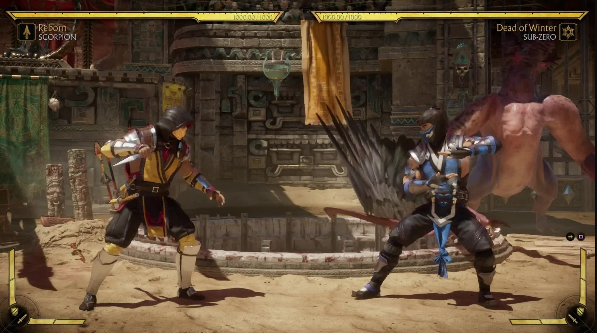
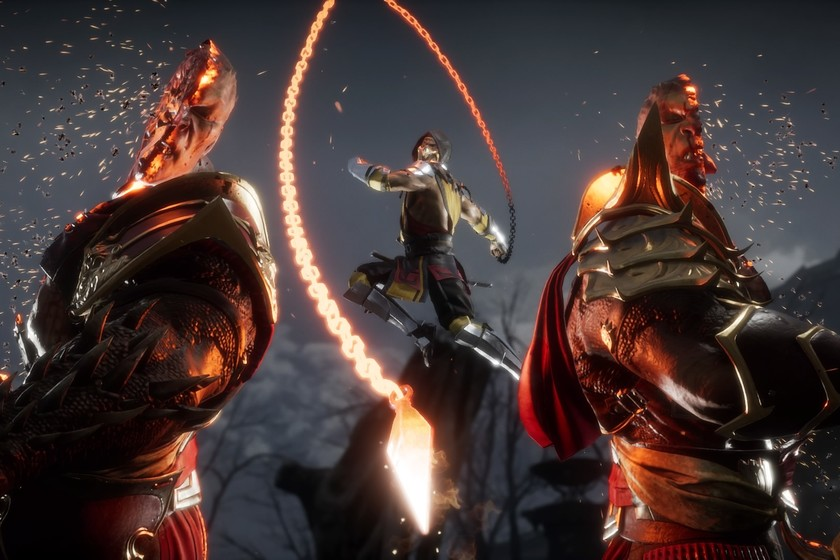

🐉 La Épica Saga de Lucha Continúa
Galería y Personalización


Scorpion es un personaje que no debe ser subestimado en el juego, ya que su arsenal de movimientos y habilidades lo convierte en un oponente formidable. Sus ataques rápidos y poderosos, combinados con su capacidad para manipular el fuego y teletransportarse, lo hacen un personaje desafiante y estratégico en el torneo de Mortal Kombat.
Fatal Blows: Movimiento similar al X-Ray solo que se ejecuta cuando la barra de vida del personaje está por debajo del 30% y solo se ejecuta una vez por partida.
El nuevo sistema de Variantes de Personaje te da control total sobre la apariencia y los movimientos de tus luchadores.
Sistema de Variantes y Lucha
| Plataforma | Todos los personajes pueden ser personalizados escogiendo el skin, los accesorios, aumentos, presentación y victoria, movimientos especiales (solo hasta 3 habilidades). |
|---|---|
| Género | Videojuego de lucha |
| Jugadores | Diseñado para ser jugado por un solo jugador, aunque también permite la cooperativa en línea. |
| Contenido Incluido | Desafíos constantes que ponen a prueba tus habilidades y ofrecen recompensas únicas. |
| Novedades | Historia Cinematográfico:** Una narrativa que altera el tiempo, donde viejos y nuevos héroes deben unirse para derrotar a Kronika, la Guardiana del Tiempo. |